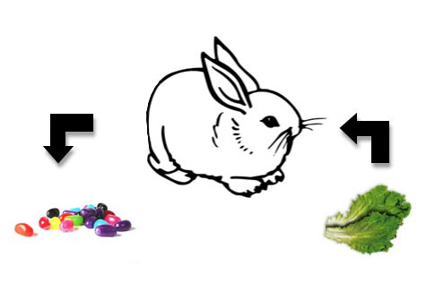
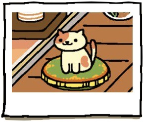

Modified from GDI Austin Ruby on Rails track. Major, major props to Cecy Correa of GDI Austin!
Girl Develop It is here to provide affordable and accessible programs to learn software through mentorship and hands-on instruction.
Some "rules"
Tell us about yourself.
# Java
for(int i = 0; i < 5; i++)
# Ruby
5.times do
We'll use REPL.IT to run Ruby code.
Okay... I'm exaggerating!
Select "Ruby"
puts "Hello World!"
1 + 1
Will evaluate to 2!
You can subtract (-), multiply (*), "divide" (%)
Just puting "Hello World!" every time is boring. We can store this in a variable!
Programmers are lazy. We like to type very little!
greeting = "Hello World!"
Variables can store data!
Strings, numbers, and booleans are a subset of Ruby datatypes.
Can combine them with "puts"!
Goal:
Go to https://repl.it/HBtw/2
Duration: 5 minutes
gets.chomp
This grabs the info the user types in...
Can save this to a variable to use the value again!
response = gets.chomp
puts "What is your name?"
name = gets.chomp
puts "Where are you from?"
location = gets.chomp
puts "What is your favorite animal?"
animal = gets.chomp
puts "Got it, your name is " + name
puts "You are from " + location
puts "And your favorite animal is " + animal
Goal:
Go to https://repl.it/HBxT/0
Duration: 5 minutes
These are all built-in with Ruby!
'gets' and 'chomp' are also built-in methods as well!
Make methods do things!
They take something in and spit something out
This method takes in a name, and greets the name.
def greeting(name)
name = name.capitalize
puts "Hello " + name
end
Whatever value is on the last line of the method is the return value
def get_date()
Date.today
end
def add_and_times(initial, add, times)
added_value = initial + add
added_value * times
end
result = add_and_times(0,1,5)
puts result
Goal:
Go to https://repl.it/HBxb/2
Duration: 5 minutes
Used when you want to do something multiple times
for i in 0..9 do
puts "#{i}"
end
while i < 9 do
puts i
i+=1
end
Do something if the test evaluates to true"
"==" means compare!
if animal == "dog"
puts "bark"
elsif animal == "cat"
puts "meow"
elsif animal == "snake"
puts "hiss"
else
puts "meep! I don't know what animal type this is :("
end
array_of_stuff = [1, "two", "3", "A"]
Can be filled with stuff on initialization!
pet_types = ["cat", "dog", "snake"]
Can be empty on initialization
pet_types = []
pet_types << "bird"
pet_types.push("bird")
pet_types = ["cat", "dog", "snake"]
There are different ways to take stuff out
pet_types.pop
This removes the last thing in the array
It also "returns" that value
pet_types[0]
pet_types[1]
pet_types[2]
You can get the value you want depending on where it is in the array
Position is its "index"
BEWARE! Arrays start at "0"
Goal:
Go to https://repl.it/HBtl/1
Duration: 5 minutes
Hashes allow you to store information in "key value" pairs.
pet = { type: "snake", price: 10 }
vs
pet_type = "snake"
pet_price = 10
This helps keep info organized.
What are other things we could store in hashes?
pet = { type: "snake", prices: [10, 15, 20] }
pet_types = [
{
name: "snakes",
price: 10
},
{
name: "cats",
price: 20
},
{
name: "dogs",
price: 20
}
]
Getting info out
pet_types[0][:name]
pet_types[0][:price]
pet_types[1][:name]
pet_types[1][:price]
# etc....
So tedious!
You can use .each do to loop through items in an array!
pet_types.each do |pet_type|
puts pet_type[:name]
puts pet_type[:price]
end
This outputs all of the types and their attributes at once!
for type in pet_types
puts pet_type[:name]
puts pet_type[:price]
end
Goal:
Go to https://repl.it/HByP/1
Duration: 5 minutes
Let's "model" a cat.
A cat has...
class Cat
attr :name
def initialize(name)
@name = name
end
def talks
puts "*meowwwww*"
end
end
What if you wanted to create a class "Dog", but you knew it would be pretty similar to "Cat"?
Is there a way to "copy" a class?
Why, yes! (Sort of.) You can use sub-classes.
class Pet
attr :name
def initialize(name)
@name = name
end
def talks(noise)
puts noise
end
end
class Cat < Pet
def talks
super("meowwww")
end
end
class Dog < Pet
#some more stuff
def talks
super("wooofff")
end
end
You can use the < to symbolize Cat and Dog is a sub-class from Pet.
The stuff available for Pet is available for Cat.
The stuff available for Cat is NOT available for Pet.
Goal:
Go to https://repl.it/HBy3/1
Duration: 10 minutes
Everyone go to https://repl.it/HBwN/7
Does stuff look familiar???
You got this!!
Please help us improve this class by taking this short survey!